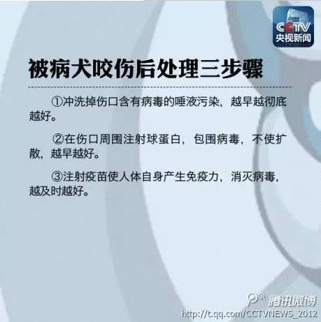
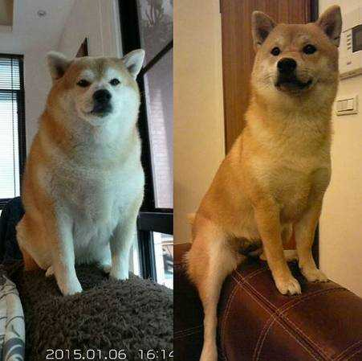

科普：谈犬色变？看央视新闻如何科普狂犬病
不了解狗狗的人们往往谈犬色变，战战兢兢生怕一不小心就患上了狂犬病，因为不了解，因为专业的科普没有得到普及，大家往往容易把狂犬病妖魔化。 中央电视台新闻中心官方微博曾出具一则狂犬病科普，现在就把它分享给大家，希望更多人了解狂犬病、不过再度恐慌狂犬病。
怀孕后还可以养狗吗？

许多爱狗爱猫的女士，到了准备怀孕的年龄，都会遇到这样的困扰？怀孕了还可以养狗吗，周围人经常劝说狗狗身上有弓形虫，会传染导致流产的。事实真的是这样吗？
一般而言，宠物会带给孕妇最主要的危害是经由宠物粪便传染，可能会造成胎儿畸形的弓形虫病。因为弓形虫会透过母体的血液、胎盘、子宫、羊水、阴道等途径，导致胚胎或胎儿感染。因此，有养宠物的家长们，在怀孕前，一般都要先做弓形虫抗体检查，避免日后引起的不良结果。
但是，因为怀孕了，害怕染上弓型虫，而隔绝去家里狗狗的接触，甚至抛弃它们，那是种很愚昧的做法。为什么这样说呢？我们先从弓型虫的传播途径开始说起。
传播方式有两种：
1.猫、犬粪便中的弓型虫卵囊、污染水或事物使人感染；人接触或进食含有污染包囊的生肉或不熟肉类。
2.而进入人体的方法只有：食物和伤口接触。（现在证实输血也可能传染上弓型虫） 所以，让弓型虫远离您，其实很简单，只需隔断传播方式，做到二点：
1.吃煮熟的肉类；
2.吃东西前洗手；
每一位母亲都希望给自己的孩子最好的成长环境，这是人之常情。遗憾的是，决大多数妇科大夫并不了解家养动物的科学，只是一味劝告准妈妈们远离宠物，甚至危言耸听，造成不必要的惊慌。盲目地把其实无害的狗狗随便送走，狗狗会害怕、忧郁，健康和性情都会发生恶化。而旧主人也会因思念、内疚而损害健康，实在是一场不必要的悲剧。
养狗的女性在准备做妈妈之前，应做TORCH检查（注：TORCH是指可导致先天性宫内感染及围产期感染而引起围产儿畸形的病原体，它是一组病原微生物的英文名称缩写，其中T（Toxopasma)是弓形虫，R(Rubella.Virus)是风疹病毒，C(Cytomegalo.Virus)是巨细胞，H(Herpes.Virus)即是单纯疱疹I/II型）。弓形虫的检查是它所包含的四个项目之一。如果TORCH的检验报告上显示已经感染过弓形虫，就可安心迎接宝贝的到来；但若结果显示正在感染，则暂时不能怀孕。假如您饲养狗狗猫咪很多年了，那么即便感染过弓形虫，也已经在体内产生了抗体。
注意，正常人感染弓形虫绝大多数没有症状，或者症状很轻，不知道是什么时候感染的，只有少数人初次感染（或称原发性感染）时有发热、淋巴结肿大、头痛、肌肉关节痛和腹痛，几天或数周后随着人体产生免疫力，症状小时，只是形成的包囊在身体里存在几个月、好几年或者更长时间，一般都是自愈。但是，有严重免疫缺陷的病人，如爱滋病人等，如果发生感染，后果就很严重。怀孕妇女感染可传染给胎儿，也有可能发生严重后果。弓形虫不能感是由一种弓形虫寄生引起的感染，世界各地的弓形虫感染非常普遍，美、英的成年人中，大约16~40%发生过感染，有的调查达70%，而欧洲大陆和拉丁美洲的成年人，50~80%发生过感染，法国人高达90%。1985~90年我国的23个省、市、自治区的调查，大都在10%以下，明显比外国低。
但周围还是有人不断劝说，尽量不要去养。确实养狗狗需要花时间、花精力、花爱心。虽然能带来很多快乐，但也有很多麻烦。那么已经养了又怎么办呢？那就是要养下去，狗狗除了主人什么都没有，它眼里只有主人。一个被遗弃过的狗狗，它们对人就有距离感，很难再对人信任了。别为爱你的生物找后妈了，遗弃更是不应该。快为人父母的人，如果连一个小生物都不负责的话，那么很难想象以后更细心、耐心地照顾小孩。
为了生出健康的宝宝，也为了更好的照顾狗狗，我们希望您能做到以下几点，来防治弓形虫感染：
第一，注意饮食卫生，肉类要充分煮熟，避开生肉污染熟食。
第二，猫要养在家里，喂熟食或成品猫粮，不让它们在外捕食。因为猫的传染是吃了感染的老鼠或鸟类，或者吃了污染猫粪的食物。
第三，要注意日常卫生，每天清除粪便，接触动物排泄物后要认真洗手。
第四，除非孕妇血清检查证明已经有过弓形虫感染，否则孕妇怀孕期间要避免接触猫及其粪便。
第五，弓形虫感染有多种简便有效的药物治疗，如磺胺类加乙胺嘧啶，和螺旋霉素等，治疗须按医嘱进行，孕妇感染及时治疗大约可使胎儿感染机会减少。
铲屎官修炼手册——养狗狗之前你须要知道的事情！
狗狗忠诚勇敢，活泼可爱，阳光帅气。饲养一条狗狗，会为我们的生活带来很多意想不到的乐趣。越来越多的人乐此不疲的加入铲屎官的行列。在狗狗给我们带来欢乐的同时，如何更好的照顾这些毛孩子，让它们更好的与我们相处呢？这也是很多宠主或预备宠主所邻面的问题。下面，“宠之趣”就为大家讲讲，养狗狗之前你须要知道的事。
我适合养狗狗么？
很多人从网上或公园等地看到了狗狗，觉得很可爱，于是决定养一只狗狗。但是，请想想你真的准备好了么？饲养狗狗可不是你看到的那么简单。
你须要给它吃的，给它喝的，给它一个睡觉的窝。带它出去玩儿，为它铲屎，擦尿。陪伴它，不离不弃。狗狗的寿命一般在10到15年，所以，一旦你选择了它，就必须要做好与它相伴很多年的准备。也许你想，如果我饲养不了了，可以送人。更有甚者会直接抛弃狗狗。那请你看看《把狗狗送人对狗狗的影响》这篇文章后，想想自己行为的后果。
如果你坚信自己可以陪它到老，对他不离不弃，好好照顾它，那您再看看自己的环境适不适合饲养狗狗。
1.我是否居住稳定 这里主要是指在外地务工，租房的朋友。大家都知道，在外务工，每年都要长途跋涉回家。然而，我国火车、飞机（狗狗可托运）等交通工具并不允许携带宠物，因此，到年底狗狗就需要送到朋友处寄养，异或送人、卖掉等等。所以“宠之趣”还是建议如果在外务工，不能将狗狗也带回家的，还是不要饲养狗狗了。
2.我家的大小 家庭大小，这个和饲养狗狗的大小有关系，如果家里面积小，就不适合饲养大型犬，毕竟大型犬的运动需求比较大，而且相对而言也更调皮，撕起家来能力更是恐怖。所以，大家在选择犬类的时候，将家庭面积考虑进去。毕竟人和狗狗同处一室，都是需要空间的。
3.我是否有时间常带狗狗散步 狗狗需要适当的运动，所以，带狗狗出去散步，一来可以帮助狗狗锻炼，接触外面的世界。二来，狗狗可以训练到在面外大小便，保持室内清洁。养狗狗是一定要多多带狗狗出去散步的。如果，你每天回家很晚，到家就睡，那很抱歉，您真的不适合饲养一只狗狗。
4.我家里是否经常有人 正如我们需要陪伴一样，狗狗也是需要陪伴的。每天我们上班，狗狗自己在家其实也是很孤独的。如果你经常出差，狗狗经常看不到你，没有人来帮你喂狗狗，帮你溜狗狗，那很抱歉，您真的不适合饲养一条狗狗。
5.我家里人是否同意饲养 饲养狗狗，请征得家庭其他成员的同意。这样狗狗会有更多的人来爱它。家人一起来照顾它，它会生活的更好。与家人相处的更融洽，更开心。如果家人不同意你饲养狗狗，而你坚持饲养狗狗，那请把你的坚持一直坚持下去。
6.我的钱是否够狗狗的开销 如果您每个月的开销不足以支付狗狗支出，那还是请您慎重一些，毕竟狗狗要吃狗粮（这个可以吃剩饭）。狗狗也会生病，并且给狗狗看病，并不比人便宜。所以，如果您手里的钱并不多，还请慎重吧！毕竟饲养狗狗真的是费心有费钱的事情。
猫为什么爱睡觉？长知识啦！

猫咪平均每天睡15个小时，一些懒猫甚至可以在一天24小时里睡上20个小时。问题来了，为什么猫咪要睡这么长时间？
猫咪的作息习惯
首先，你要知道猫咪在黄昏到黎明这段时间里最活跃,它们在白天睡觉，黄昏开始活动。当你第一次带只猫咪回家时，也许会被这样的生活习惯所吓倒。猫咪会在你睡着的时候，尽其所能的在你家捣乱。等到早上它们用过早膳，世界开始慢慢苏醒，猫大人又会蜷缩回自己的小窝，开始一整天漫长的睡眠。
节约能量
猫咪有着捕食者的生理习性。大多数捕食者是在夜间追逐、捕猎，大型猫科动物，像狮子也有相同的作息时间—白天睡觉，夜晚捕猎。仅管家猫已经在很大程度上被驯化，但它们依然保持着一些猫科动物的原始本性，例如作息时间、捕猎技巧等。猫科动物在捕猎时会匍匐行走在暗影中，悄无声息地突袭目标猎物。家猫在玩耍中也会显现出捕猎的本性。
要知道捕猎是要耗费很大能量的，所以，不管你家的猫咪是在户外抓老鼠还是在家中玩猫薄荷玩具，它所有的睡眠都是为了储存跑、扑、爬、追所需的能量。
睁一只眼
跟人类一样，猫咪也分深睡眠和浅睡眠(打盹)。当猫咪打盹的时候(一般时长为15分钟到1个小时)，它保持警惕，随时醒来，立即做出反应。
猫咪深睡眠时，它的大脑会快速地运动。但猫咪深睡眠5分钟后又会转回打盹。打盹-深睡眠的交替会一直持续到猫咪醒来。
通常，小奶猫和老猫会比一般的成年猫睡的时间长。
下雨天
猫科动物和人类一样会受天气影响，这一点都不奇怪。猫咪不同的品种、年龄、性格和整体身体健康，会造成他们行为的大相径庭。但是，不管你的猫咪一贯的习性如何，喵星人都会在适合睡觉的天气里多睡一会儿。不用怀疑，就算你的猫咪是足不出户的御宅，下雨天、天冷的时候，它(也许还有你)都会呵欠连天，睁不开眼。
现在是什么时间？
猫咪是微光性动物，它们在黄昏和黎明时最活跃。在漆黑的深夜和白天，其他捕食者四处搜寻时，猫咪正趴着休息。有些猫咪在夜间也会很活跃，特别是那些小奶猫。但是，猫咪也是社会性、适应性很强的动物，它们会调整自己的睡眠习惯来获取更多和爱人时间——爱人就是你(猫主人)。猫咪也会因为喂食的时间来调整自己的作息时间，这也解释了为什么家猫比野猫睡的多。
无论你的猫咪是活泼的小奶猫，还是成熟的大猫，它互动、活动的幅度很大程度上取决于它的“猫咪电池”是否不断充电。
猫咪也许确实睡的时间长，但它们一旦醒来，就不会浪费每一秒钟。
这只肥柴好可怜，承受着这个年纪不该承受的体重
如果你经常泡在网上，一定看过这张表情图↓
没错，原图也很胖
再来看看侧面，360度无死角的胖。
你能体会到朋友都瘦瘦的，只有自己胖的感受吗？可以用绝望来形容。
其实，moja并不是一直都这么胖，原来的它可是个标准的帅小伙！
别怀疑，这是同一只狗。
但是，自从3岁时做了绝育后，moja的身体就像吹了气球一样越来越胖……
慢慢的，就形成了这样的差距…
主人也带它去医院检查过，医生说moja非常健康，没有任何毛病，长胖可能是因为绝育代谢变慢的原因吧……
新手看过来：狗狗到新家应该注意这些问题！
当你把心爱的狗狗带回了家，这只是养狗的开始，你和狗狗都要有一个适应的过程。这个过程需要你耐心和信心，一个好的新开始是成功的一半嘛。只要你的狗狗开始信任你了，其它的问题都好解决。
1、消除狗宝宝的不安情绪
狗狗到了一个陌生的新环境里，很容易感到害怕和孤独。这时候的小狗很容易叫，毕竟这是狗的天性。这个时候，你一定不要不耐烦或者打骂它，这样会让小狗狗对你产生恐惧和逆反的心理，以后再想沟通都难了。其实，你只需要为它准备好足够的水和食物，给它准备一个温暖而舒适的窝或者垫子，把你质地柔软的旧衣服拿来垫在上头，如果是冬天还可以放个热水袋，放个闹钟之类有规律响声的东西也是个好办法，把窝放到它可以随时看到你的地方(比如床的旁边、卧室的墙角处)，都可以减少它的恐惧感。
2、注意狗狗到新家后的饮食
在消除了不安的情绪后，狗狗就会放心的大吃大喝了。如果你不清楚小狗原来的饮食习惯，那就以“少食多餐”为原则，三个月前的小狗每天以四餐为佳，每次不能喂过量，否则会造成腹泻。也不要只给小狗特别喜欢的某种食物，长期给它吃某一种非狗粮的食物会导致营养不平衡、挑食、偏食，造成肥胖、营养不良或是营养过剩。
3、是否到新家后就给狗狗洗澡
答案是：不要!因为小狗刚到一个新家，对环境不适应，心理很紧张，吃喝习惯也有些改变，身体的抵抗力也比原来弱许多。虽然它有可能很脏，身上有味道，但是你也一定要挺住，不要一进门就给它洗澡。你可以用湿毛巾给它擦擦，或是在它的毛上打一些痱子粉以减少身上的臭味。等它适应了新环境以后再给它洗。洗完还要注意保暖，不然狗狗可能会感冒。对于抵抗力弱的小狗很可能转化成对于小狗来说致命的大病，千万大意不得。
4、注意观察小狗
小狗到了新家以后紧张、吠叫、吃的少是正常的，不用紧张，一般过两天就好了。可是如果它一直吃的很少，表现得没有食欲、不爱玩、没精神或是有流鼻涕、咳嗽、拉稀、呕吐之类不正常的反应，就应该带它去医院检查一下各项指标，看看是不是不光是因为不适应环境而是因为身体有什么问题引起的，越早发现狗狗的病越早治疗，狗狗活下来的可能性就越大。
另外，在小狗到了新家以后你就应该频繁的叫它的名字，尽量多的和它玩玩，和它说说话都有助于消除它的紧张情绪，慢慢来，过不了几天它就会把你当成它生命中的最重要的人了，爱你信任你。而你才会真正体会到养狗的乐趣啦!!